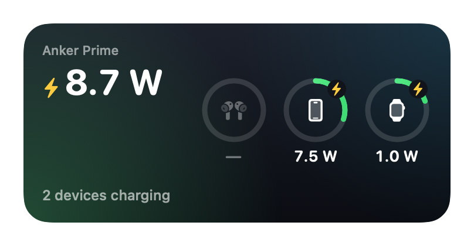
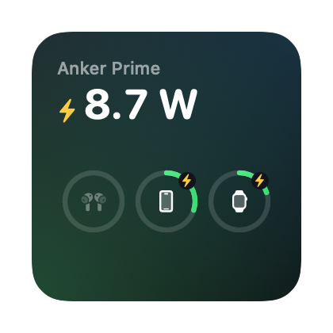

See the watts on every pad Ватты на каждой площадке
A menu bar app and desktop widget for the Anker Prime Wireless Charging Station. Phone, watch and earbuds, live over Bluetooth. No Anker app, no account. Приложение для строки меню и виджет для Anker Prime Wireless Charging Station. Телефон, часы и наушники в реальном времени по Bluetooth. Без приложения Anker и аккаунта.


What you getЧто внутри
Live in the menu barЖивые цифры в меню
Total power next to the clock. Open the menu to see power, voltage and current of each pad.Общая мощность рядом с часами. В меню — мощность, напряжение и ток каждой площадки.
Desktop widgetВиджет на рабочий стол
Small and medium sizes with charge rings. Works with the tinted and clear widget styles.Малый и средний размеры с кольцами зарядки. Поддерживает тонированный и прозрачный стили.
Local onlyТолько локально
The app talks to the charger directly over Bluetooth LE. No cloud, no tracking, no network access.Приложение говорит с зарядкой напрямую по Bluetooth LE. Без облака, слежки и выхода в сеть.
InstallУстановка
- Download
AnkerBar.zipand unzip it. СкачайтеAnkerBar.zipи распакуйте. - Move
AnkerBar.appto the Applications folder. ПеренеситеAnkerBar.appв папку «Программы». - The app is not notarized by Apple, so remove the quarantine flag once: Apple не заверяла приложение, поэтому один раз снимите карантин:
xattr -dr com.apple.quarantine /Applications/AnkerBar.app
- Open AnkerBar and allow Bluetooth access. Откройте AnkerBar и разрешите доступ к Bluetooth.
- Right-click the desktop → Edit Widgets → Anker Prime. Правый клик по рабочему столу → «Изменить виджеты» → Anker Prime.
How it worksКак это работает
AnkerBar finds the charger by its Anker service, runs the encrypted handshake (AES-GCM, then ECDH on P-256) and subscribes to telemetry. Each pad reports status, voltage, current and power. The protocol is ported from SolixBLE to Swift, with CoreBluetooth and CryptoKit. AnkerBar находит зарядку по сервису Anker, проходит зашифрованное рукопожатие (AES-GCM, затем ECDH на P-256) и подписывается на телеметрию. Каждая площадка сообщает статус, напряжение, ток и мощность. Протокол перенесён из SolixBLE на Swift с CoreBluetooth и CryptoKit.